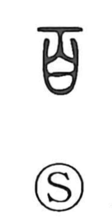

百

Uncategorized
Kun: momo | On: hyaku, byaku
hundred ・ whole ・ all ・ many ・ various
Explanation
An indicative character formed by adding a single horizontal stroke above 白. The base graph 白 depicts a skull; in 百 a further mark—likely the nostrils of that skull—is uniquely added, and with this addition the value “hundred” is signaled. The graph thereby takes its on reading from 白. Because a hundred was regarded as a perfect number, 百 naturally extends to mean the whole, all, a great many, or various.